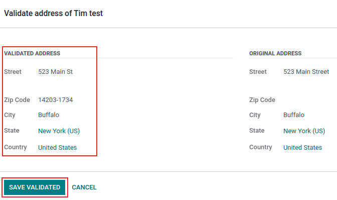

Integración con AvaTax¶
AvaTax de Avalara es un software para impuestos basado en la nube. La integración de AvaTax con Odoo proporciona cálculos de impuestos en tiempo real específicos para cada región cuando los usuarios venden, compran y facturan artículos en Odoo. El cálculo del impuesto con AvaTax es compatible con todos los países de las Naciones Unidas y es posible realizar transacciones transfronterizas.
Importante
AvaTax solo está disponible para su integración a bases de datos y empresas ubicadas en Estados Unidos y Canadá. Esto significa que la posición fiscal o el país de una base de datos solo puede configurarse en Estados Unidos o Canadá. Consulte la siguiente documentación para obtener más información: País fiscal.
AvaTax contabiliza las tasas impositivas por ubicación para cada estado, municipio o distrito y ciudad, además mejora la precisión de las remesas gracias al uso de leyes, reglas, límites de jurisdicción y circunstancias especiales (como exenciones fiscales y de productos). Las empresas que integran AvaTax pueden mantener el control interno del cálculo de sus impuestos con esta sencilla integración de API.
Importante
Existen algunas limitaciones en Odoo al usar AvaTax para calcular impuestos:
AvaTax no es compatible con la aplicación Punto de venta de Odoo. Un modelo de cálculo de impuestos dinámico es excesivo para las transacciones que corresponden a una sola dirección de entrega, como tiendas o restaurantes.
AvaTax y Odoo usan la dirección de la empresa, no la del almacén.
El impuesto sobre el consumo no es compatible. Este incluye impuestos al tabaco, cigarros electrónicos, vaporizadores, combustibles y otros sectores específicos.
Ver también
Documentos de apoyo de Avalara: Sobre AvaTax
Configuración en AvaTax¶
Para usar AvaTax necesita una cuenta de Avalara para su configuración. En caso de que no haya configurado una, contacte a Avalara para comprar una licencia: Avalara: contacto (en inglés).
Truco
Luego de configurar la cuenta deberá conservar el ID de la cuenta de AvaTax ya que es necesario durante el proceso de configuración en Odoo. En Odoo, este número es el ID de la API.
Después cree un perfil básico de la empresa.
Crear un perfil básico de la empresa¶
Para el siguiente paso deberá tener a la mano detalles esenciales del negocio, tales como las ubicaciones donde se recaudan impuestos, los productos y servicios vendidos (y sus ubicaciones de ventas) y las exenciones de impuestos al cliente, en caso de que las haya. Siga la documentación de Avalara para crear un perfil básico para la empresa:
Conexión con AvaTax¶
Conéctese a AvaTax después de crear el perfil básico de la empresa en Avalara. Este paso vincula a Odoo y AvaTax de forma bidireccional.
Vaya al entorno de prueba o de producción de Avalara, este dependerá del tipo de cuenta de Avalara que la empresa desee integrar.
Ver también
Inicie sesión para crear una clave de licencia. Vaya a y luego haga cic en Generar clave de licencia.
Nota
El siguiente mensaje aparece como advertencia: Si su aplicación empresarial está conectada a las soluciones de Avalara, la conexión no funcionará hasta que actualice la aplicación con la nueva clave de licencia. Esta acción no se puede deshacer.
Generar una nueva licencia rompe la conexión con las aplicaciones empresariales existentes que usan la integración con AvaTax. Asegúrese de actualizarlas y usar la nueva clave.
Haga clic en Generar clave de licencia si esta es la primera integración API que realiza entre AvaTax y Odoo.
Asegúrese de que la conexión anterior se puede romper en caso de que se trate de una clave de licencia adicional. Solo hay una clave de licencia asociada con cada una de las cuentas de prueba y producción de Avalara.
Importante
Copie esta clave en un lugar seguro. Le recomendamos que almacene una copia de la clave de licencia para futuras referencias, pues no podrá recuperarla luego de salir de esta pantalla.
Configuración en Odoo¶
Antes de usar AvaTax es necesario que haga algunos ajustes adicionales en Odoo para asegurar que los impuestos se calculen de manera precisa.
Verifique que la base de datos de Odoo contiene los datos necesarios. El país que estableció en la base de datos determina la posición fiscal y ayuda a AvaTax a calcular los tipos impositivos exactos.
País fiscal¶
Vaya a para establecer el país fiscal.
Ver también
Seleccione Estados Unidos o Canadá en la parte de País fiscal en la sección Impuestos, después haga clic en Guardar.
Ajustes de la empresa¶
Todas las empresas que operan en la base de datos de Odoo deben tener establecida una dirección completa. Vaya a y busque la sección Empresas, verifique que solo haya una empresa operando la base de datos de Odoo. Haga clic en Actualizar información para abrir otra página en la que podrá actualizar sus detalles.
Haga clic en Administrar empresas en caso de que haya varias operando en la base de datos. Esta acción abrirá una lista con las empresas que puede seleccionar. Haga clic en una empresa específica para actualizar su información.
Los administradores de la base de datos deben asegurarse de que los campos Calle…, Calle 2…, Ciudad, Estado, Código postal y País estén actualizados en todas las empresas.
Esto garantiza que el cálculo de los impuestos sea preciso y que no existan errores en las operaciones contables de fin de año.
Ver también
Instalación del módulo¶
A continuación, asegúrese de que el módulo AvaTax de Odoo está instalado. Vaya a , escriba avatax en la barra de búsqueda y presione Enter. Aparecerán los siguientes resultados:
Nombre |
Nombre técnico |
Descripción |
|---|---|---|
Avatax |
|
El módulo de AvaTax predeterminado. Este módulo agrega las funciones de base de AvaTax para calcular impuestos. |
AvaTax para órdenes de venta |
|
Incluye la información necesaria para calcular los impuestos sobre las órdenes de venta en Odoo. |
AvaTax para suscripciones |
|
Este módulo incluye las funciones necesarias para calcular impuestos en las suscripciones en Odoo. |
Cuenta de AvaTax - Comercio electrónico |
|
Incluye las funciones para el cálculo de impuestos del proceso de pago en la aplicación Comercio electrónico de Odoo. |
Cuenta de AvaTax - Comercio electrónico - Entrega |
|
Incluye las funciones para el cálculo de impuestos del proceso de entrega en la aplicación Comercio electrónico de Odoo. |
Haga clic en el botón Instalar del módulo AvaTax: account_avatax. Al hacerlo, instalará lo siguiente:
AvaTax:
account_avataxAvaTax para órdenes de venta:
account_avatax_saleCuenta de AvaTax - Comercio electrónico:
website_sale_account_avatax
Si necesita usar AvaTax en la aplicación Suscripciones o para los impuestos de entrega en la aplicación Comercio electrónico, haga clic en Instalar en cada uno de esos módulos.
Ajustes de AvaTax en Odoo¶
Vaya a para integrar la API de AvaTax con Odoo. Debe hacer los ajustes y agregar las credenciales en los campos de AvaTax en la sección de Impuestos.

Prerrequisitos¶
Primero seleccione el entorno en el que la empresa desea usar AvaTax. Puede ser el entorno de prueba o el de producción.
Ver también
Consulte el siguiente documento (en inglés) si necesita ayuda para determinar el entorno de AvaTax que debe usar (si producción o prueba).
Credenciales¶
Ahora proporcione las credenciales. Escriba el ID de la cuenta de AvaTax en el campo ID de la API y la clave de la licencia en el campo Clave API.
Importante
El ID de cuenta está disponible al iniciar sesión en el portal de AvaTax (entorno de prueba o producción). En la esquina superior derecha, haga clic en las iniciales del usuario y luego en Cuenta. El ID de cuenta es el primero que aparece.
Consulte esta documentación: Conexión con AvaTax. Le permitirá acceder a la clave de la licencia.
En el campo Código de la empresa deberá proporcionar el código correspondiente de Avalara que pertenece a la empresa que está configurando. En caso de que no lo haga, Avalara lo interpretará como DEFAULT, es decir, predeterminado. Puede acceder al código de la empresa en el portal administrativo de Avalara.
Primero inicie sesión en el portal de AvaTax (en el entorno de prueba o de producción) y después vaya a . El valor del código de la empresa está en la fila Empresa de la columna Código de la empresa.

Opciones transaccionales¶
Hay dos ajustes transaccionales para AvaTax que puede configurar: Usar UPC y Confirmar transacciones.
Si la casilla junto a Usar UPC está seleccionada, las transacciones usarán los códigos universales de producto (UPC) en lugar de los códigos personalizados definidos en Avalara. Consulte a un contador público certificado (CPA) para recibir orientación particular.
Si la casilla Confirmar transacciones está seleccionada, entonces las transacciones en la base de datos de Odoo se confirmarán para reportarlas en AvaTax.
Validación de dirección¶
La función Validación de la dirección garantiza que la dirección más actualizada según las normas postales sea la que está establecida en un contacto en Odoo. Esto es importante para que el cálculo de los impuestos de los clientes sea preciso.
Importante
La función Validación de la dirección solo funciona con contactos y clientes en América del Norte.
Seleccione la casilla junto al campo Validación de la dirección.
Importante
Para que los cálculos de los impuestos sean exactos, lo ideal sería que los contactos que almacena en su base de datos cuenten con una dirección completa. Sin embargo, es probable que AvaTax haga un intento de implementación solo con el país, estado y código postal., pues estos tres campos son obligatorios.
Guarde los ajustes para implementar la configuración.
Truco
Seleccione un contacto y valide su dirección de forma manual en la aplicación . Después de que configuró el módulo AvaTax en la base de datos, el botón Validar aparece abajo de la dirección.
Haga clic en Validar, después aparecerá una ventana emergente con la dirección validada y la dirección original. Haga clic en Guardar validada si la dirección validada es correcta y debe usarla con propósitos fiscales.
Advertencia
Es necesario que valide todas las direcciones de contactos en la base de datos de Odoo que ya había proporcionado con anterioridad y deberá usar el proceso de validación manual antes descrito. Las direcciones no se validan de forma automática si ya las tenía configuradas, esto solo ocurre al calcular los impuestos.
Probar conexión¶
Haga clic en Probar conexión después de introducir toda la información anterior en los ajustes de AvaTax en Odoo. Esto asegura que el ID de la API y la clave API sean correctos, además realiza una conexión entre Odoo y la interfaz de programación de aplicaciones (API) de AvaTax.
Sincronizar parámetros¶
Al finalizar la configuración y los ajustes de la sección AvaTax haga clic en el botón Sincronizar parámetros. Esta acción sincroniza los códigos de exención de AvaTax.
Posición fiscal¶
Vaya a . Aparece una posición fiscal con el nombre Mapeo automático de impuestos (AvaTax), haga clic en ella para abrir la página de configuración de la posición fiscal de AvaTax.
Asegúrese de que la casilla Usar la API de AvaTax esté seleccionada.
También puede seleccionar la casilla junto al campo Detectar de forma automática. En caso de que habilite esta opción, esta posición fiscal aplicará de forma automática a las transacciones en Odoo.
Al activar Detectar de forma automática también hace que aparezcan algunos parámetros específicos, como si se requiere número de identificación tributaria, la identificación fiscal extranjera, el grupo de países, el país, los estados federales o el rango postal. Al completar estos parámetros filtrará el uso de la posición fiscal, pero si los deja vacíos todos los cálculos se realizarán con esta posición fiscal.
Advertencia
Si no selecciona la casilla Detectar de forma automática entonces deberá configurar la posición fiscal de cada cliente en la pestaña Ventas y compra de su registro. Vaya a o a y seleccione al cliente para establecer una posición.
Vaya a la pestaña Ventas y compra y busque la sección Información fiscal. Ahí, busque el campo Posición fiscal y establezca una.
Cuentas de AvaTax¶
La pestaña AvaTax aparece al seleccionar la casilla Usar API de AvaTax. Haga clic en esta pestaña para abrir otros dos ajustes.
El primer ajuste es para la cuenta de facturación de AvaTax y el segundo es para la cuenta de reembolso de AvaTax. Para que su cierre contable anual sea correcto deberá asegurarse de que ambas cuentas están configuradas. Consulte a un contador público certificado (CPA) para recibir orientación específica sobre cómo configurar ambas cuentas.
Haga clic en Guardar para implementar los cambios.
Mapeo de impuestos¶
La integración con AvaTax está disponible en las órdenes de venta y facturas con la posición fiscal de AvaTax incluida.
Mapeo de categorías de producto¶
Especifique una categoría de AvaTax en las categorías de productos antes de usar la integración. Vaya a y seleccione aquella en la que desea agregar la Categoría de AvaTax. Seleccione una categoría del menú desplegable del campo Categoría de AvaTax o haga clic en Buscar más… para abrir la lista completa de opciones.

Mapeo de productos¶
Las categorías de AvaTax también se pueden configurar en cada producto. Para configurar la categoría de AvaTax, vaya a y seleccione el producto al que desea agregar esta categoría. En la pestaña Información general, a la derecha, hay un campo de selección etiquetado con Categoría de AvaTax. Por último, haga clic en el menú desplegable y seleccione una categoría o haga clic en Buscar más… para elegir una que no esté en la lista.
Nota
Si el producto y su categoría tienen una categoría de AvaTax configurada, entonces la categoría de AvaTax del producto tiene prioridad.
Importante
Es necesario que asigne una categoría de AvaTax al producto o a la categoría de Producto para cada uno de estos, según la ruta que elija.
Ver también